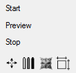

The start screen shows some default scenes or the last rendered image.

If you click on some of the images, Gestaltlupe starts rendering the scene in the upper small preview control. The left part ist a preview of the result image. The right control shows the rendered scene from bottom. This helps in navigation to find out how far the set is from the camera.

The main control buttons are placed in the the top left of the main window.

Start starts rendering the full size image.
Preview starts rendering a small version of the full size image.
Stop stops current rendering.
Click on one of the bottom images allows quick access to some useful controls:
 Navigation
Navigation
 Material parameters
Material parameters
 Formula parameters
Formula parameters
 Image parameters.
Image parameters.
The next pages shows a documentation of this controls.